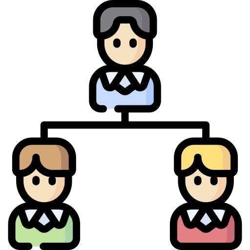

Organización
Luego de la planeación de los objetivos y actividades futuras a realizar para lograr las metas propuestas, el siguiente paso es distribuir cada actividad entre los diferentes grupos de trabajo que componen una empresa. Esto va a depender de las aptitudes físicas e intelectuales de cada trabajador y de los recursos que posee la empresa. La finalidad de la organización es asignar un objetivo a cada área de la empresa para que pueda ser cumplido con el mínimo de gastos y con un grado de satisfacción máximo en cada empleado.
Actividades de la organización
- Hacer una selección detallada de los trabajadores indicados para el puesto indicado.
- Subdividir cada tarea en unidades operativas.
- Seleccionar una autoridad administrativa para cada sector.
- Proporcionar materiales y recursos útiles a cada sector.
